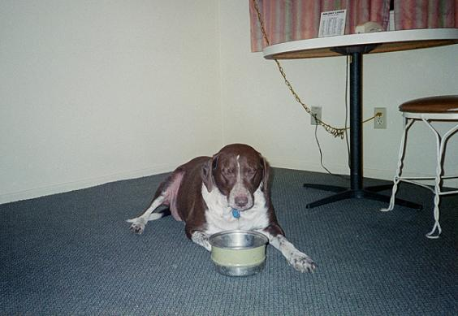
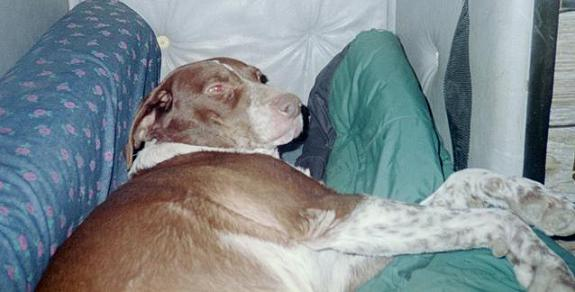

Harley Harley Is Sooooo Cool! This is a picture of Harley after he just ate. Harley is seven years old, he has the same birthday as Nathan, he came from the pound when he was five months old, he is a German Shorthair Pointer and he loves to chase tennis balls. 
Harley in His Room It's not really a room we just call it that because thats were he is most of the time. If he's bad you just say "Go to your room!" and if you say it a few times he'll go.  |